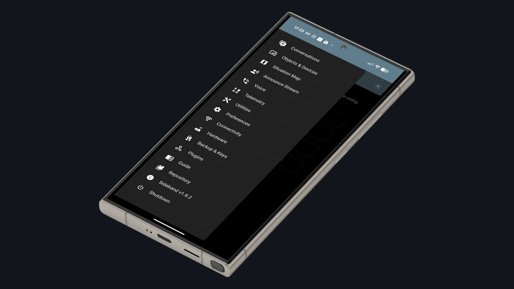
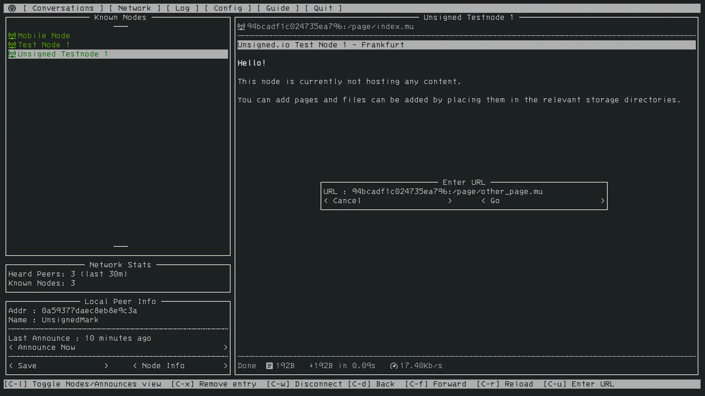
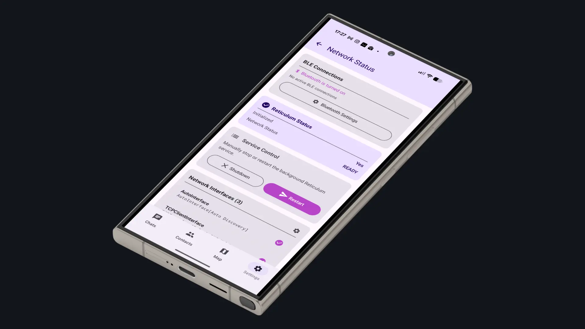

Aplicações
O ecossistema Reticulum inclui apps prontas a usar para comunicação segura e descentralizada.

App gráfica para Android, Linux, macOS e Windows com mensagens, chamadas de voz em tempo real, transferência de ficheiros, telemetria e mapas.
Ver mais →
Plataforma de comunicação mesh off-grid, encriptada e resiliente. Interface terminal com sistema de páginas e messaging.
Ver mais →
Cliente LXMF com interface web, amigável e acessível. Suporta mensagens de imagem, voz e transferência de ficheiros.
Ver mais →
App Android nativa para mensagens via Bluetooth LE, TCP ou RNode (LoRa) sobre LXMF e Reticulum. Comunicação off-grid sem infraestrutura.
Ver mais →
Protocolo de transporte de áudio em tempo real sobre Reticulum. Permite construir telefones hardware para comunicação mesh.
Ver mais →